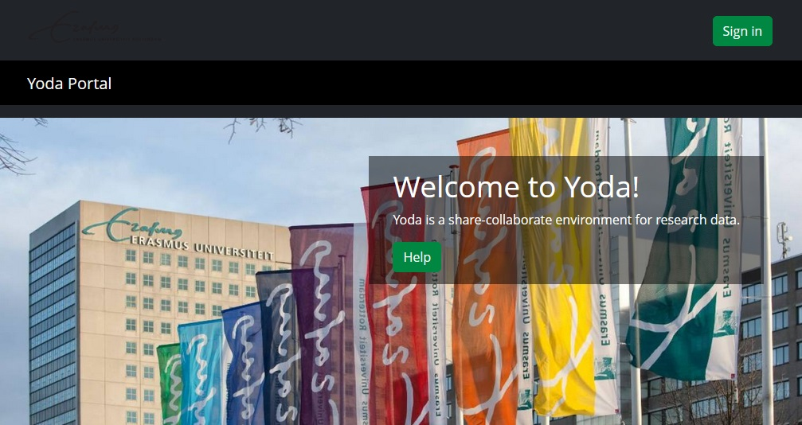
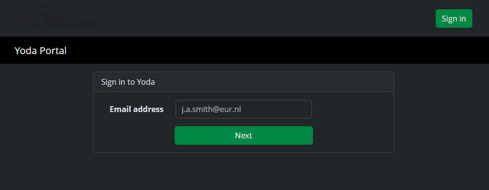
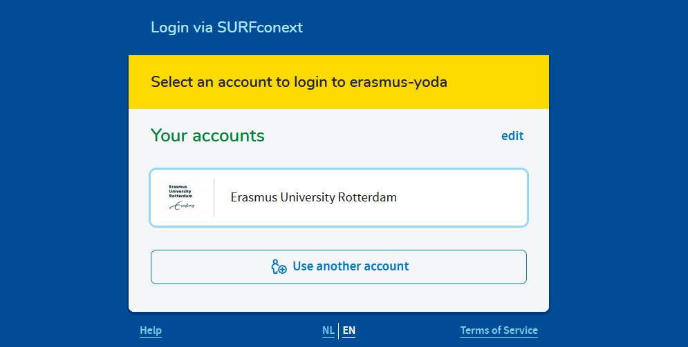
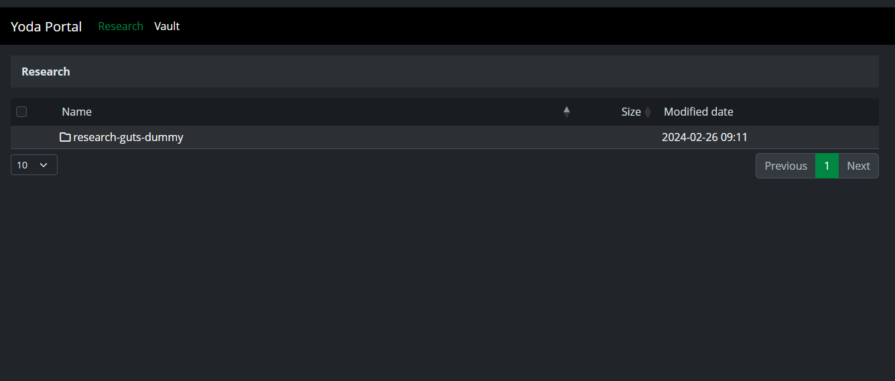
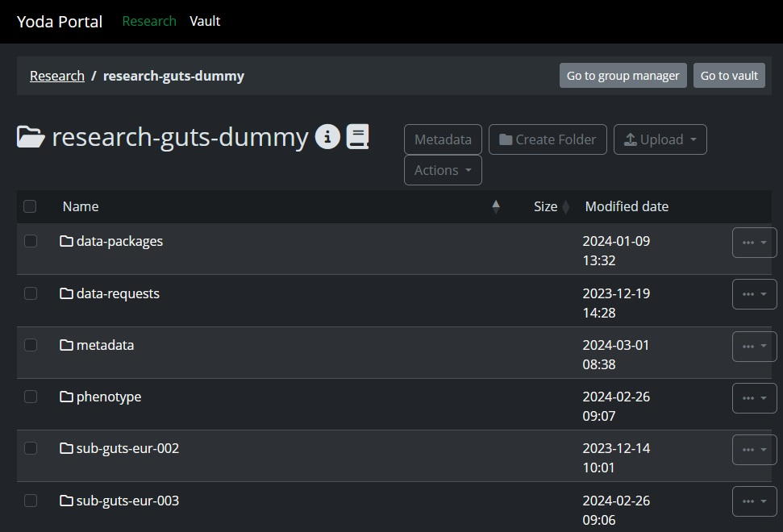

Local Yoda web portals and support
For each data collection location in GUTS there is a local Yoda portal that will be used to upload, store and archive your data. The table below shows which Yoda URL connects to which data collection location within the GUTS consortium and where to find your local Yoda support page.
You can visit this page for general Yoda guidance provided by SURF.
Requesting Yoda workspace and uploading to Yoda
In the three steps below, we explain how you can request a personal workspace for Yoda, sign into that workspace and upload your data.
Requesting a Yoda workspace differs per location and is handled by each university differently. The most important thing is that the workspaces that will be created, for all data collected in a specific location, follow the same naming convention. In total four workspaces will be needed per location (two for the pilot and two for the main study), which are divided in the following ways:
A distinction will be made between pilot data and main study data
Within these two categories, a distinction will be made between raw data and “up to guts standard” data
All workspaces within Yoda will start with the prefix research-. In the table below you will find the final names of the workspaces for each location. They follow these naming conventions:
Workspaces for the pilot will follow the convention: guts-pilot-[location] and then an added -raw for the raw data workspace
Workspaces for the main study will follow the convention: guts-[location] and then an added -raw for the raw data workspace
| Data Location |
Pilot workspace name |
Main study workspace name |
| WP1 Amsterdam-VU |
research-guts-pilot-vu-raw
research-guts-pilot-vu |
research-guts-vu-raw
research-guts-vu |
| WP1 Rotterdam-EUR |
research-guts-pilot-eur-raw
research-guts-pilot-eur |
research-guts-eur-raw
research-guts-eur |
| WP2 Leiden-UL |
research-guts-pilot-lei-raw
research-guts-pilot-lei |
research-guts-lei-raw
research-guts-lei |
| WP3 Amsterdam-UVA |
research-guts-pilot-uva-raw
research-guts-pilot-uva |
research-guts-uva-raw
research-guts-uva |
| WP4 Utrecht-UU |
research-guts-pilot-uu-raw
research-guts-pilot-uu |
research-guts-uu-raw
research-guts-uu |

If you go to your local Yoda web portal you can find the “Sign in” button in the top right. This takes you to a page where you have to sign in with your institutional email (the same email you would use for other SURFconext or SRAM logins). NOTE: You are only able to sign in if you have been added to a workspace!

This sends you on to the SURFconext/SRAM sign in page.

After you have signed in you will find that the ‘Research’ and ‘Vault’ buttons have appeared in the top left of the screen.
If you requested a workspace using the same email address you used to sign in, or you have been added to that workspace, you can find it by clicking on Research on the Top left.

In this overview find your research folder (in this example “research-guts-dummy”).

Here you can find the data that you have uploaded previously. We will highlight two major actions here and explain them in more detail later:
- Group management: Using the “Go to group manager” button in the top right, you invite members (if you are the group manager, which you are if you requested the workspace) and give different permissions to members (read/write rights etc.).